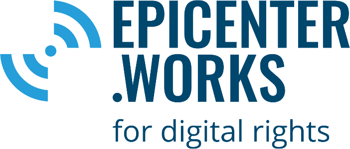
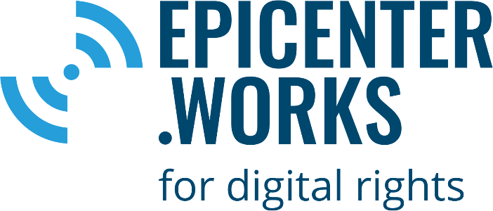

Der Aufbau eines gemeinwohlorientierten digitalen Ökosystems muss endlich politische Priorität bekommen!
In Krisensituationen zeigt sich die Bedeutung von unabhängigen und belastbaren digitalen Infrastrukturen, die es Menschen, Organisationen und Firmen ermöglichen, ihren alltäglichen Aufgaben nachzukommen. Von den Umstellungen zur Eindämmung von Covid-19 haben bislang vor allem die großen Technologiekonzerne profitiert: Die Verlagerung des Lebens in die digitale Sphäre beschert ihnen größere Marktanteile, wachsende Nutzungszahlen und immer größere Datensammlungen. Um in in Zeiten von Krisen nicht von ihnen abhängig zu sein, braucht es ein aktives digitales Ökosystem, das echte Wahlmöglichkeiten bietet.
Seit vielen Jahren entwickeln zivilgesellschaftliche Organisationen, Sozialunternehmen und Freiwillige digitale Werkzeuge, Infrastruktur und Policy-Empfehlungen für eine nachhaltige und zukunftsfähige Digitalisierung: von freiem Zugang zum Internet durch Initiativen für freie Funknetze, der Bereitstellung von sicheren Kommunikationswegen, Angeboten zu Freiem Wissen bis hin zu Open-Data-Anwendungen, die Bürgerinnen und Bürgern Zugang zu Informationen geben. Diese Ansätze folgen gemeinschaftlichen Werten wie Freiheit, Offenheit und Transparenz, und genau darin liegt ihr gesellschaftlicher Mehrwert. Bisher erhalten sie dafür noch nicht genug Unterstützung von öffentlicher Seite.
Erst zivilgesellschaftliches Engagement macht digitale Infrastruktur wirklich resilient.
Ihr volles Potenzial kann die digitale Zivilgesellschaft nur dann entfalten, wenn Politik nicht nur punktuell in Krisensituationen unterstützt, sondern langfristig und nachhaltig zivilgesellschaftliches Engagement und den Aufbau eines gemeinwohlorientieren digitalen Ökosystems fördert.
Wir wenden uns daher mit folgenden Empfehlungen an die Politik:
Weitere Öffnung der Digitalpolitik für gesellschaftlichen Input
Digitalpolitik, die das Gemeinwohl ins Zentrum stellt, lässt sich nur gemeinsam mit gesellschaftlichen Akteurinnen, Akteuren und Initiativen verwirklichen. Hierfür muss die Politik sich noch weiter für Vorschläge aus der Gesellschaft öffnen und diese in die Politikgestaltung miteinbeziehen. Dazu braucht es die Anerkennung zivilgesellschaftlicher Expertise und ein klares Bekenntnis, deren Wissen und Kompetenzen für die Politikgestaltung zu nutzen.
Gezielte Förderung
Die digitale Zivilgesellschaft ist nur durch das ehrenamtliche Engagement und die Spenden von Bürgerinnen und Bürgern arbeitsfähig. Gerade in Krisensituationen brechen diese Stützpfeiler schnell weg und bedrohen die Existenz von Vereinen, Stiftungen und Initiativen.
In Deutschland mangelt es an niedrigschwelliger finanzieller Unterstützung für Organisationen und Sozialunternehmen aus der digitalen Zivilgesellschaft. Es braucht neue Fördermechanismen, die den Aufbau nachhaltiger Strukturen unterstützen und nicht nur Innovation im Blick haben, sondern auch die Instandhaltung und Weiterentwicklung bestehender Technologien. Möglich wäre eine solche Förderung beispielsweise durch eine vom Bund geförderte Stiftung öffentlichen Rechts, die Entwicklung, Wartung und Bereitstellung digitaler Technologien für die Gesellschaft fördert.
Öffentliches Geld, Öffentliches Gut
Es braucht rechtliche Grundlagen, die es verpflichtend machen, dass mit öffentlichen Geldern erarbeitete Inhalte offen zugänglich und weiterverwendbar gemacht werden. Der Datenschutz muss dabei immer gewahrt sein.
Dazu gehören: öffentlich finanzierte Software, Datenbestände und Informationen öffentlicher Stellen, Forschungs- und Bildungsinhalte öffentlich getragener Institutionen sowie die Inhalte des öffentlich-rechtlichen Rundfunks.
Entwicklung öffentlicher digitaler Infrastruktur
Wir empfehlen kontinuierliche staatliche Investitionen in die Entwicklung und Instandhaltung digitaler Infrastruktur und den Aufbau widerstandsfähiger Netze.
Wir fordern die Förderung von Dezentralisierung und einem breiten Ökosystem von Betreibern digitaler Infrastruktur, um digitale Souveränität zu erlangen und Abhängigkeiten von einzelnen Anbietern aufzulösen, durch den Abbau von Betreibermonopolen sowie dem konsequenten Einsatz von offenen Standards, Freier- und Open-Source-Software-Technologien.
Unterzeichnende Organisationen:
 
